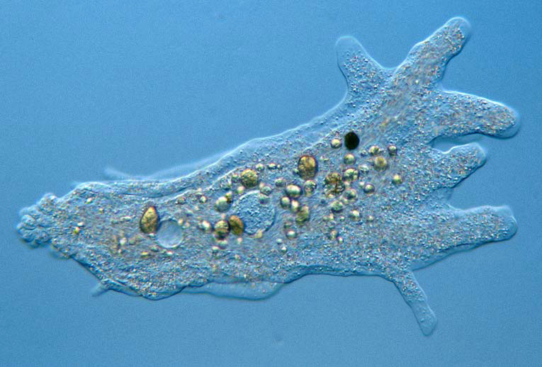

Одноклітинні організми
Одноклітинні тварини складаються з однієї клітини.
Тому інша їхня назва — Найпростіші. До них належать амеба, інфузорія —
туфелька, радіолярія та ін.
Єдина клітина здійснює всі життєво важливі функції тварини:
- рух
- живлення
- дихання
- виділення
- обмін речовин
- подразливість
- розмноження
Будова амеби звичайної:
- клітинна мембрана
- цитоплазма з ядром
- органели
- включення
